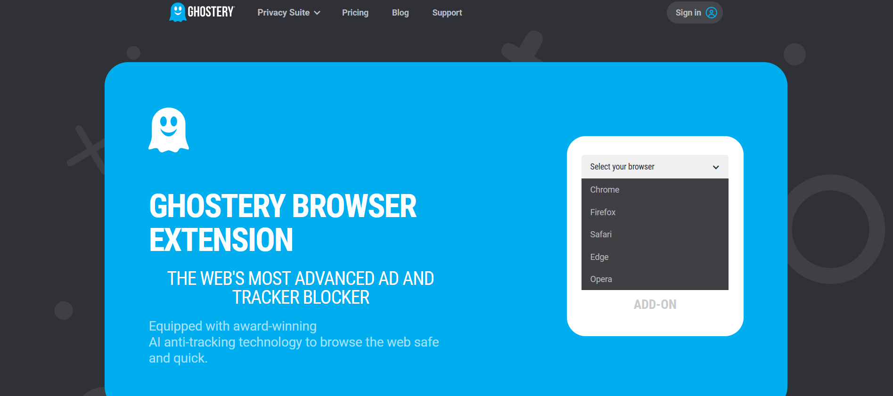
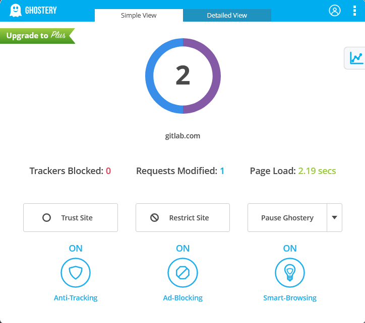

Ghostery

Ghostery es una extensión
de navegador relacionada con la privacidad y la seguridad y una aplicación de
navegador móvil.
VISITAR
Beneficios
Ghostery permite a sus usuarios detectar y controlar fácilmente las etiquetas y los rastreadores de JavaScript. Los errores y balizas web de JavaScript están integrados en muchas páginas web, en gran medida invisibles para el usuario, lo que permite recopilar los hábitos de navegación del usuario a través de cookies HTTP, así como participar en formas de seguimiento más sofisticadas, como la huella dactilar del lienzo.
Ghostery bloquea las peticiones HTTP y las redirige según su dirección de origen de varias maneras: Bloqueo de scripts de seguimiento de terceros que son utilizados por los sitios web para recopilar datos sobre el comportamiento de los usuarios con fines publicitarios, de marketing, de optimización del sitio y de seguridad. Estos scripts, también conocidos como etiquetas o rastreadores, son la tecnología subyacente que coloca las cookies de rastreo en los navegadores de los consumidores. Actualización continua de una "biblioteca de scripts" que identifica cuando se encuentran nuevos scripts de seguimiento en Internet y los bloquea automáticamente. Creación de "listas blancas" de sitios web en los que el bloqueo de scripts de terceros está desactivado y otras funciones avanzadas para que los usuarios puedan configurar y personalizar su experiencia.
Cuando se bloquea un rastreador, cualquier cookie que el rastreador haya colocado no es accesible a nadie más que al usuario, y por lo tanto, no puede leerse cuando se le llama. Ghostery informa de todos los paquetes de rastreo detectados, y si Ghostery los ha bloqueado o no, en una "ventana de resultados" accesible haciendo clic en el icono de Ghostery en el navegador. Cuando está configurado, Ghostery también muestra la lista de rastreadores presentes en la página en un cuadro de superposición temporal púrpura.
Por que elegimos
Elegimos por que nos pareció una extension útil y vemos como una necesidad hoy en día debido a la alta cantidad de adds molestos al navegar.